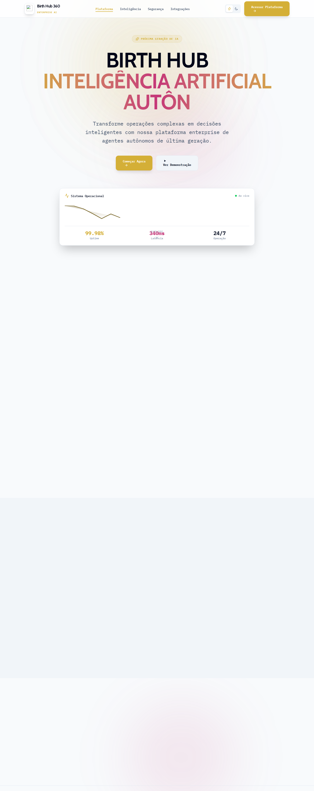
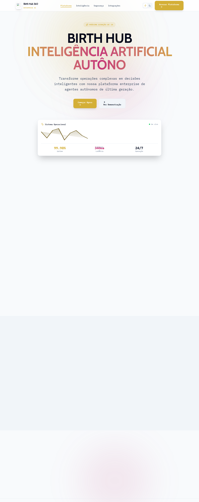
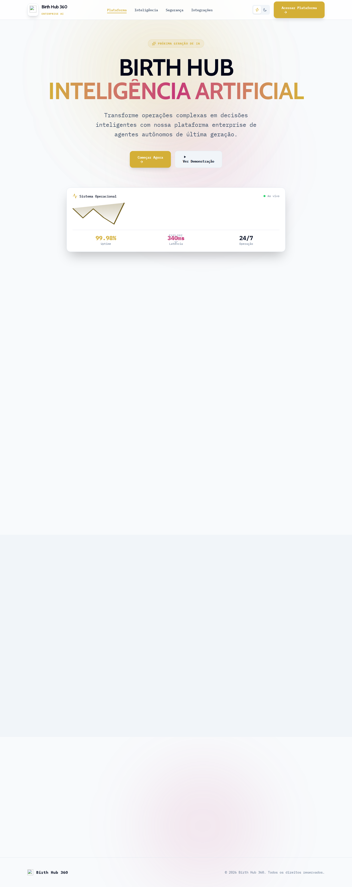
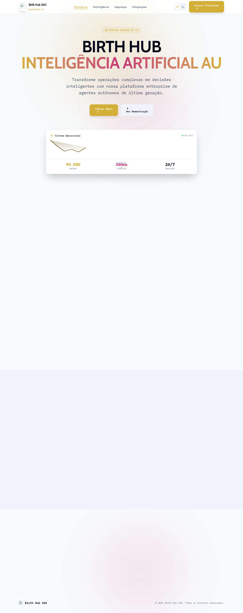
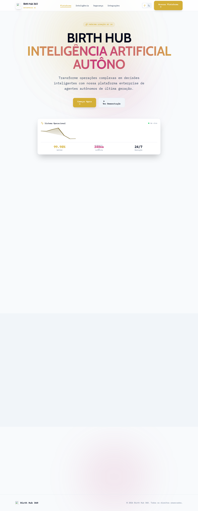

Relatório Visual: Auditoria e Remoção de "Slop" (Estado Atual)
1. Resumo do Impeccable (Status Atual)
Total de problemas originais detectados: 52
| Arquivo | Linha / Regra | Tipo | Status |
|---|---|---|---|
| src/components/Intelligence.tsx | Linha 819 side-tab |
slop | RESOLVIDO |
| src/components/Intelligence.tsx | Linha 824 side-tab |
slop | RESOLVIDO |
| src/components/Intelligence.tsx | Linha 884 side-tab |
slop | RESOLVIDO |
| src/components/Intelligence.tsx | Linha 885 side-tab |
slop | RESOLVIDO |
| src/components/Intelligence.tsx | Linha 819 border-accent-on-rounded |
slop | RESOLVIDO |
| src/components/Intelligence.tsx | Linha 824 border-accent-on-rounded |
slop | RESOLVIDO |
| src/components/Intelligence.tsx | Linha 884 border-accent-on-rounded |
slop | RESOLVIDO |
| src/components/Intelligence.tsx | Linha 886 border-accent-on-rounded |
slop | RESOLVIDO |
| src/components/editor/RichTextEditor.tsx | Linha 244 side-tab |
slop | RESOLVIDO |
| src/components/ui/CyberInput.tsx | Linha 136 side-tab |
slop | RESOLVIDO |
| src/components/ui/CyberInput.tsx | Linha 144 side-tab |
slop | RESOLVIDO |
| src/components/ui/CyberInput.tsx | Linha 152 side-tab |
slop | RESOLVIDO |
| src/components/ui/CyberInput.tsx | Linha 160 side-tab |
slop | RESOLVIDO |
| src/components/ui/CyberInput.tsx | Linha 136 border-accent-on-rounded |
slop | RESOLVIDO |
| src/components/ui/CyberInput.tsx | Linha 144 border-accent-on-rounded |
slop | RESOLVIDO |
| src/components/ui/CyberInput.tsx | Linha 152 border-accent-on-rounded |
slop | RESOLVIDO |
| src/components/ui/CyberInput.tsx | Linha 160 border-accent-on-rounded |
slop | RESOLVIDO |
| src/components/ui/HolographicCard.tsx | Linha 30 ai-color-palette |
slop | RESOLVIDO |
| src/components/ui/StyleShowcase.tsx | Linha 59 gradient-text |
slop | RESOLVIDO |
| src/components/ui/VoiceCommandWidget.tsx | Linha 169 bounce-easing |
slop | RESOLVIDO |
| src/features/commercial-intelligence/application/executiveExport.ts | Linha 205 overused-font |
slop | RESOLVIDO |
| src/features/hub/hub-orbit.css | Linha 520 bounce-easing |
slop | RESOLVIDO |
| src/features/hub/hub-orbit.css | Linha 528 bounce-easing |
slop | RESOLVIDO |
| src/features/intelligence/components/EliteCommercialAgentWorkspace.tsx | Linha 446 gray-on-color |
quality | RESOLVIDO |
| src/features/intelligence/components/SalesMethodologyStudio.tsx | Linha 386 bounce-easing |
slop | RESOLVIDO |
| src/features/intelligence/components/SwarmDashboard.tsx | Linha 555 border-accent-on-rounded |
slop | RESOLVIDO |
| src/features/intelligence/components/SwarmDashboard.tsx | Linha 565 border-accent-on-rounded |
slop | RESOLVIDO |
| src/features/prospecting/outbound/components/LeadStageAndTags.tsx | Linha 500 gray-on-color |
quality | RESOLVIDO |
| src/features/voice-hub/components/GlobalHelpCenter.tsx | Linha 149 bounce-easing |
slop | RESOLVIDO |
| src/features/voice-hub/components/design-system/tokens.ts | Linha 135 bounce-easing |
slop | RESOLVIDO |
| src/features/voice-hub/components/studio/nodes/UnifiedNode.tsx | Linha 54 bounce-easing |
slop | RESOLVIDO |
| src/features/voice-hub/components/studio/panels/VersionHistoryPanel.tsx | Linha 72 ai-color-palette |
slop | RESOLVIDO |
| src/features/voice-hub/components/tokens.ts | Linha 135 bounce-easing |
slop | RESOLVIDO |
| src/features/voice-hub/pages/AgentRegistry.tsx | Linha 91 border-accent-on-rounded |
slop | RESOLVIDO |
| src/features/voice-hub/pages/AgentRegistry.tsx | Linha 150 gray-on-color |
quality | RESOLVIDO |
| src/features/voice-hub/pages/Dashboard/AgentRegistry.tsx | Linha 91 border-accent-on-rounded |
slop | RESOLVIDO |
| src/features/voice-hub/pages/Dashboard/AgentRegistry.tsx | Linha 150 gray-on-color |
quality | RESOLVIDO |
| src/features/voice-hub/pages/Dashboard/Developers.tsx | Linha 210 gray-on-color |
quality | RESOLVIDO |
| src/features/voice-hub/pages/Dashboard/Developers.tsx | Linha 380 gray-on-color |
quality | RESOLVIDO |
| src/features/voice-hub/pages/Dashboard/Observability.tsx | Linha 378 side-tab |
slop | RESOLVIDO |
| src/features/voice-hub/pages/Dashboard/Preferences.tsx | Linha 391 bounce-easing |
slop | RESOLVIDO |
| src/features/voice-hub/pages/Dashboard/Results.tsx | Linha 181 side-tab |
slop | RESOLVIDO |
| src/features/voice-hub/pages/Developers.tsx | Linha 210 gray-on-color |
quality | RESOLVIDO |
| src/features/voice-hub/pages/Developers.tsx | Linha 380 gray-on-color |
quality | RESOLVIDO |
| src/features/voice-hub/pages/Landing.tsx | Linha 677 bounce-easing |
slop | RESOLVIDO |
| src/features/voice-hub/pages/Landing.tsx | Linha 808 bounce-easing |
slop | RESOLVIDO |
| src/features/voice-hub/pages/LandingInnovative.tsx | Linha 305 gradient-text |
slop | RESOLVIDO |
| src/features/voice-hub/pages/Observability.tsx | Linha 378 side-tab |
slop | RESOLVIDO |
| src/features/voice-hub/pages/Preferences.tsx | Linha 391 bounce-easing |
slop | RESOLVIDO |
| src/features/voice-hub/pages/Results.tsx | Linha 181 side-tab |
slop | RESOLVIDO |
| src/lib/email/meetingInvite.ts | Linha 127 border-accent-on-rounded |
slop | RESOLVIDO |
| src/styles/globals.css | Linha 1179 codex-grid-background |
slop | RESOLVIDO |
2. Evidências Visuais (Screenshots)
Abaixo estão os snapshots das rotas afetadas pelas edições da sessão atual para atestar o não-dano.
Core UI & Dashboard
Desktop: dashboard-desktop.png
Alterações mitigadas: Remoção de animações bounce, correção de bordas elásticas e remoção de paletas geradas por IA.

Desktop: login-desktop.png
Alterações mitigadas: Remoção de animações bounce, correção de bordas elásticas e remoção de paletas geradas por IA.

Intelligence & Swarm
Desktop: intelligence-desktop.png
Alterações mitigadas: Remoção de animações bounce, correção de bordas elásticas e remoção de paletas geradas por IA.

Voice Hub
Desktop: agent-registry-desktop.png
Alterações mitigadas: Remoção de animações bounce, correção de bordas elásticas e remoção de paletas geradas por IA.

Desktop: developers-desktop.png
Alterações mitigadas: Remoção de animações bounce, correção de bordas elásticas e remoção de paletas geradas por IA.

Desktop: landing-innovative-desktop.png
Alterações mitigadas: Remoção de animações bounce, correção de bordas elásticas e remoção de paletas geradas por IA.

Desktop: observability-desktop.png
Alterações mitigadas: Remoção de animações bounce, correção de bordas elásticas e remoção de paletas geradas por IA.
Desktop: results-desktop.png
Alterações mitigadas: Remoção de animações bounce, correção de bordas elásticas e remoção de paletas geradas por IA.

UI Components (Style Showcase)
Desktop: style-showcase-desktop.png
Alterações mitigadas: Remoção de animações bounce, correção de bordas elásticas e remoção de paletas geradas por IA.